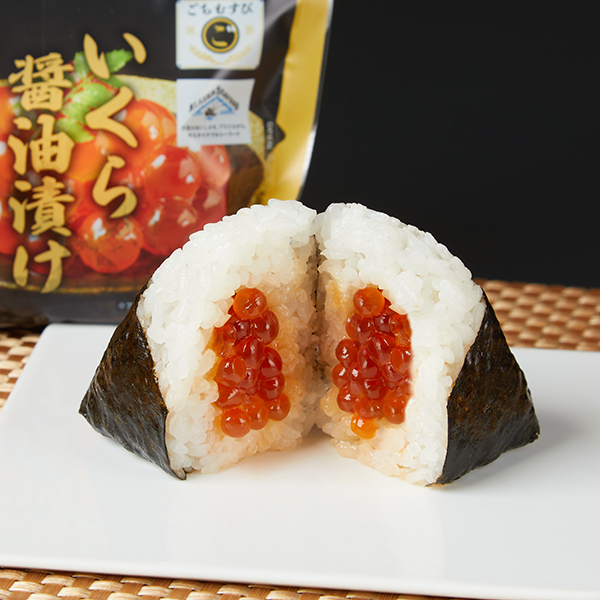
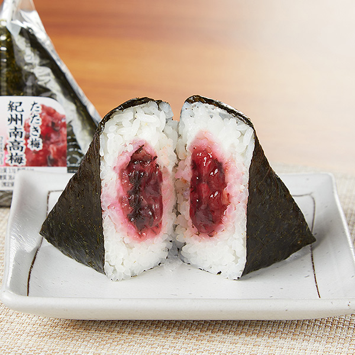
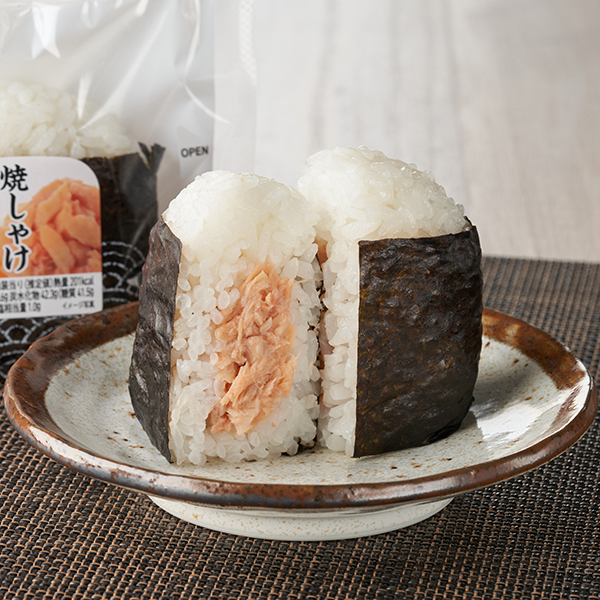
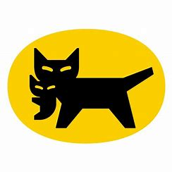

このページでは世界シェアを確立し、日々躍進し続けているコンビニ
family martについて紹介していくwebsiteです。
ここでは利用者の方々に慣れ親しんだ呼び方、
「ファミマ」という表現で統一させていただきます。
- ファミマとは？
- 人気商品
- サービス
ファミマについて。
ファミマの公式ホームページへのリンクです。
タイムリーに情報が得られます
ファミマのwikiへのリンクです。ファミマの詳しい情報を知ることができます。
ファミマで売れている商品は？？
何といってもコンビニの代名詞であるおにぎり。
その中でも現役コンビニ店員の私から言わせてもらいます！
- ファミマのおにぎりで贅沢したい。。。そんな気分ならこれ！

～ごちむすび いくら醤油漬け～
おにぎりの概念を少し変えるような一品。
「私今日仕事頑張ったしな～」と、そんな自分にいくらを沢山使ったおにぎりで褒めてみてはいかがでしょうか。
- 二つ目は！
日本人で嫌いな人はいない！愛すべき日本の食文化～

～手巻 紀州南高梅～
普段から私は和食を頻繁に食していますが、おにぎりで何にするか迷った時は無難に梅。
だって間違いないでしょ？と、その期待を裏切らないほどのしっかりした梅の味が効いています。
程よい酸味と高く香る風味、味。絶品です。
- 三つ目は！
コスパ最強！しゃけなのにこの価格！？

～直巻 焼しゃけ～
コンビニ界隈でNo.1と言ったらしゃけおにぎり！でしょう。
普通の手巻しゃけおにぎりと比べて30円安いこの商品！
味も完璧な焼きしゃけ。それを低価格で買えるならこれほどの嬉しさはない！
そんな一品。
おにぎりについて紹介させて頂きました。この他にも魅力的なおにぎりは沢山ありますので
色んな機会、気分に合わせて手に取っていただけると幸いです。byコンビニ店員
どんなことが利用できるの？？
小売店として様々な商品を展開しています。その他にもコンビニとして、多様なサービスも提供しています。
ファミポートと呼ばれる端末では、イベントなどの支払いなど。
その点において不安なところがございましたら、気軽に店員に申しつけていただければと思います。
ヤマト運輸の宅急便も取り扱っています。元払い伝票や着払い伝票などももちろんお渡しできます。
